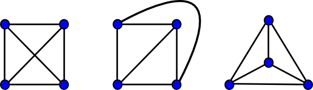
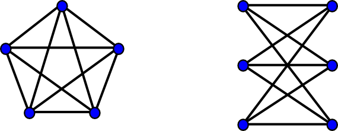

A graph is planar if it can be drawn in
two-dimensional space with no two of its edges crossing. Such a drawing of a
planar graph is called a plane drawing.
Every planar graph also admits a straight-line drawing, which is a
plane drawing where each edge is represented by a line segment.
|  |
|  |
A graph is planar if and only if it does not contain a subgraph that is an expansion[1] of either K5 or K3,3
A subgraph that is an expansion of K5 or K3,3 is called a Kuratowski subgraph. Because of the above theorem, given any graph, one can produce either a plane drawing of a graph, which will certify that the graph is planar, or a minimal set of edges that forms a Kuratowski subgraph, which will certify that the graph is non-planar - in both cases, the certificate of planarity or non-planarity is easy to check.
Any plane drawing separates the plane into distinct regions bordered by graph
edges called faces. As a simple example, any embedding of a triangle
into the plane separates it into two faces: the region inside the triangle and
the (unbounded) region outside the triangle. The unbounded region outside the
graph's embedding is called the outer face. Every embedding yields
one outer face and zero or more inner faces. A famous result called
Euler's formula states that for any
planar graph with n vertices, e edges, f faces, and
c connected components,
n + f = e + c + 1
This formula implies that any planar graph with no self-loops or parallel edges
has at most 3n - 6 edges and 2n- 4 faces. Because of these
bounds, algorithms on planar graphs can run in time O(n) or space
O(n) on an n vertex graph even if they have to traverse all
edges or faces of the graph.
A convenient way to separate the actual planarity test from algorithms that accept a planar graph as input is through an intermediate structure called a planar embedding. Instead of specifying the absolute positions of the vertices and edges in the plane as a plane drawing would, a planar embedding specifies their positions relative to one another. A planar embedding consists of a sequence, for each vertex in the graph, of all of the edges incident on that vertex in the order in which they are to be drawn around that vertex. The orderings defined by this sequence can either represent a clockwise or counter-clockwise iteration through the neighbors of each vertex, but the orientation must be consistent across the entire embedding.
In the Boost Graph Library, a planar embedding is a model of the PlanarEmbedding concept. A type that models PlanarEmbedding can be passed into the planarity test and populated if the input graph is planar. All other "back end" planar graph algorithms accept this populated PlanarEmbedding as an input. Conceptually, a type that models PlanarEmbedding is a property map that maps each vertex to a sequence of edges, where the sequence of edges has a similar interface to a standard C++ container. The sequence of edges each vertex maps to represents the ordering of edges adjacent to that vertex. This interface is flexible enough to allow storage of the planar embedding independent from the graph in, say, a std::vector of std::vectors, or to allow for graph implementations that actually store lists of adjacent edges/vertices to internally re-arrange their storage to represent the planar embedding. Currently, only the former approach is supported when using the native graph types (adjacency_list, adjacency_matrix, etc.) of the Boost Graph Library.
The function boyer_myrvold_planarity_test can be used to test whether or not a graph is planar, but it can also produce two important side-effects: in the case the graph is not planar, it can isolate a Kuratowski subgraph, and in the case the graph is planar, it can compute a planar embedding. The Boyer-Myrvold algorithm works on any undirected graph.
An undirected graph is connected if, for any two vertices u and v, there's a path from u to v. An undirected graph is biconnected if it is connected and it remains connected even if any single vertex is removed. Finally, a planar graph is maximal planar (also called triangulated) if no additional edge (with the exception of self-loops and parallel edges) can be added to it without creating a non-planar graph. Any maximal planar simple graph on n > 2 vertices has exactly 3n - 6 edges and 2n - 4 faces, a consequence of Euler's formula. If a planar graph isn't connected, isn't biconnected, or isn't maximal planar, there is some set of edges that can be added to the graph to make it satisfy any of those three properties while preserving planarity. Many planar graph drawing algorithms make at least one of these three assumptions about the input graph, so there are functions in the Boost Graph Library that can help:
Some algorithms involve a traversal of the faces of the graph, and the Boost Graph Library has the generic traversal function planar_face_traversal for this purpose. This traversal, like other traversals in the Boost Graph Library, can be customized by overriding event points in an appropriately defined visitor class.
An intermediate step in some drawing algorithms for planar graphs is the creation of a canonical ordering of the vertices. A canonical ordering is a permutation of the vertices of a maximal planar graph. It orders the vertices in a way that makes it straightforward to draw the ith vertex once the first (i-1) vertices have been drawn - the only edges connecting the ith vertex to vertices already drawn will be adjacent to a consecutive sequence of vertices along the outer face of the partially embedded graph. The function planar_canonical_ordering will create such an ordering, given a maximal planar graph and a planar embedding of that graph.
A straight line drawing can be created using the function chrobak_payne_straight_line_drawing, which takes a maximal planar graph, a planar embedding of that graph, and a canonical ordering as input. The resulting drawing maps all of the vertices from a graph with n vertices to integer coordinates on a (2n-4) x (n-2) grid such that when the edges of the graph are drawn as line segments connecting vertices, no two edges cross. Self-loops and parallel edges are ignored by this algorithm.
Finally, there are two functions that can be used to verify the results of the boyer_myrvold_planarity_test and chrobak_payne_straight_line_drawing functions:
In both of the above cases, it may be preferable to sacrifice the nice theoretical upper bound for performance by using the C++ STL. The bucket sort allocates and populates a vector of vectors; because of the overhead in doing so, std::stable_sort may actually be faster in some cases. The custom list also uses more space than std::list, and it's not clear that anything other than carefully constructed pathological examples could force a std::list to use n2 operations within the planar embedding algorithm. For these reasons, the macro BOOST_GRAPH_PREFER_STD_LIB exists, which, when defined, will force the planar graph algorithms to use std::stable_sort and std::list in the examples above.
See the documentation on individual algorithms for more information about complexity guarantees.
[1] A graph G' is an expansion of a graph G if
G' can be created from G by a series of zero or more edge
subdivisions: take any edge {x,y} in the graph, remove it, add a new
vertex z, and add the two edges {x,z} and {z,y} to the
graph. For example, a path of any length is an expansion of a single edge and
a cycle of any length is an expansion of a triangle.